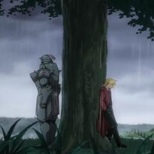

Fullmetal Alchemist Brotherhood: motivos para assistir
Último blog postado:

FMA, sigla para Fullmetal Alchemist, aqui, eu dou alguns motivos
para ver esse anime!
Espero que goste.
... Se torna um alquimista com certificado nacional, e logo passa a ser chamado de 'fullmetal alchemist'.